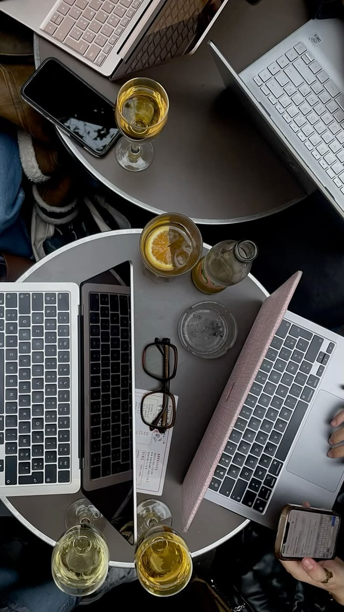

0
Kolabolator
Sarjana Terapan Manajemen Informatika
KarsaDigital hadir sebagai wadah eksplorasi mahasiswa Manajemen Informatika di bidang Web Development & System Analysis untuk menciptakan pengalaman web yang responsif, intuitif, dan bermakna.

Rekapitulasi singkat perjalanan dan standar kualitas kolaborasi kami.
0
Kolabolator
0
Karya tuntas
0
Commitment